This tutorial provides an introduction to creating websites using R, R Markdown and GitHub pages.
This tutorial was originally presented at the Memorial Sloan Kettering Cancer Center Department of Epidemiology and Biostatistics R User Group meeting on January 23, 2018.
The current version was updated and presented at the R Ladies NYC Meetup on February 15, 2018.
The main types of websites you may want to create include:
The minimum requirements for an R Markdown website are:
index.Rmd: contains the content for the website homepage_site.yml: contains metadata for the websiteA basic example of a _site.yml file for a website with two pages:
name: "my-website"
navbar:
title: "My Website"
left:
- text: "Home"
href: index.html
- text: "About"
href: about.htmlAnd a basic index.Rmd to create the Home page:
---
title: "My Website"
---
Hello, Website! Welcome to the world.You can find an overview of R Markdown website basics here.
This tutorial will focus on hosting websites through GitHub pages. Hosting websites on GitHub pages is free.
If you don’t have a GitHub account already, sign up for one at https://github.com/join?source=header-home with username YOUR_GH_NAME. I’ll be referring to this username, YOUR_GH_NAME, as “your GitHub username” throughout this tutorial.
There are other free sites for website hosting, and another popular choice is Netlify.
An example from the homepage of my personal website:
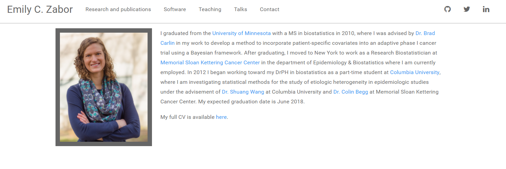
There are two main steps for creating a personal website that will be hosted on GitHub:
_site.yml and index.Rmd file in your new directoryThe R Project is useful because RStudio will recognize your project as a website, and provide appropriate build tools.
Note: After creating the R Project and initial files, you may need to close the project and reopen it before R will recognize it as a website and show the appropriate build tools.
Edit the _site.yml file to change the metadata, layout, and theme of your website. Preview Jekyll themes here and play around with different options. Themes are easy to change even after you have added content.
For example, the _site.yml for my personal website looks like this:
name: "Emily C. Zabor"
output_dir: "."
navbar:
title: "Emily C. Zabor"
left:
- text: "Writing"
href: research.html
- text: "Speaking"
href: talks.html
- text: "Programming"
href: software.html
- text: "Teaching"
href: teaching.html
right:
- icon: fa-envelope fa-lg
href: contact.html
- icon: fa-github fa-lg
href: http://github.com/zabore
- icon: fa-twitter fa-lg
href: https://twitter.com/zabormetrics
- icon: fa-linkedin fa-lg
href: https://www.linkedin.com/in/emily-zabor-59b902b7/
output:
html_document:
theme: paper
css: 'styles.css'Edit and create .Rmd files that contain your website content, which will produce the html pages of your website when you knit them.
For example, the index.Rmd file for my personal website homepage looks like this:
---
---
<link rel="stylesheet" href="styles.css" type="text/css">
<img src="images/emily_2.jpg" style="width:25%; border:10px solid; margin-right: 20px" align="left">
I like to analyze data to answer research questions and test hypotheses. Currently I investigate questions related to breast cancer through my work as a Research Biostatistician at [Memorial Sloan Kettering Cancer Center](https://www.mskcc.org/departments/epidemiology-biostatistics) in the department of Epidemiology & Biostatistics.
I graduated from the [University of Minnesota](http://www.sph.umn.edu/academics/divisions/biostatistics/) with a MS in biostatistics in 2010. In 2012 I began working toward my DrPH in biostatistics as a part-time student at [Columbia University](https://www.mailman.columbia.edu/become-student/departments/biostatistics), where I am investigating statistical methods for the study of etiologic heterogeneity in epidemiologic studies under the advisement of [Dr. Shuang Wang](https://www.mailman.columbia.edu/people/our-faculty/sw2206) at Columbia University and [Dr. Colin Begg](https://www.mskcc.org/profile/colin-begg) at Memorial Sloan Kettering Cancer Center. I expect to graduate by the end of 2018.
I am a well-known R enthusiast, including serving on the board and being an active member of [R Ladies NYC](http://www.rladiesnyc.org/).
My full CV is available [here](files/Zabor_CV_2017_Q4.pdf).Once you have your content written and the layout setup, on the Build tab in RStudio, select “Build Website”:
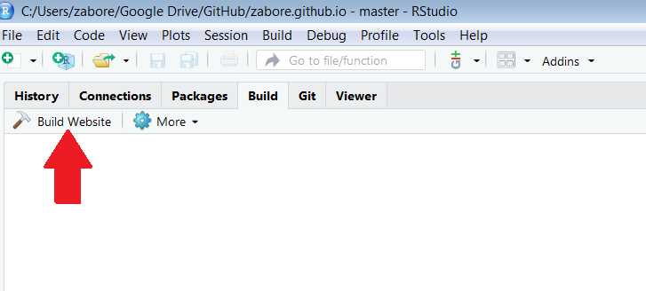
Now your local directory contains all of the files needed for your website:
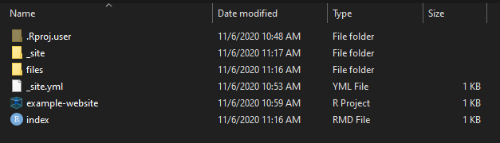
Basic approach:
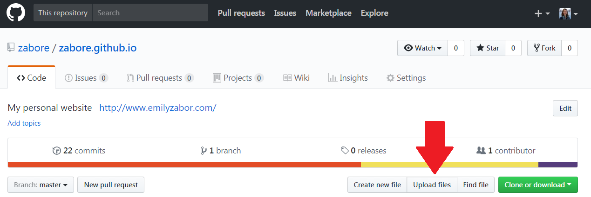
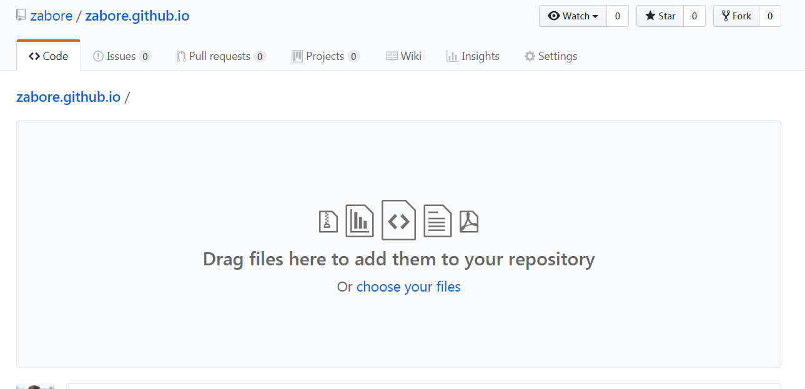
Advanced approach (recommended):
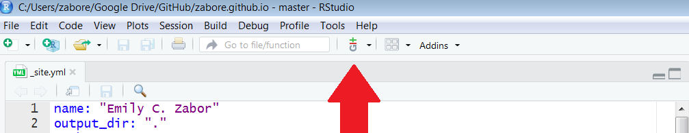
The default is for your site to be hosted at http://YOUR_GH_NAME.github.io, but you can add a custom domain name as well. There are two steps:
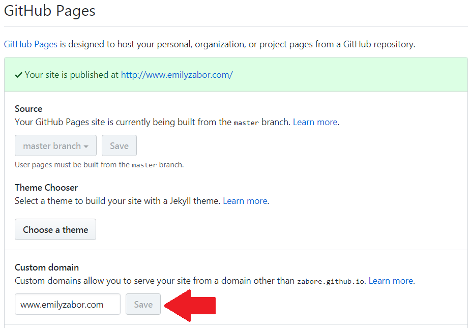
It will appear like this in your repository:
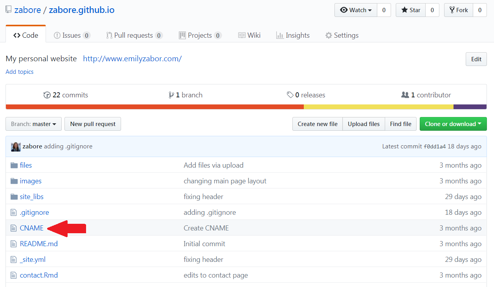
And inside the file you will simply have your domain name:
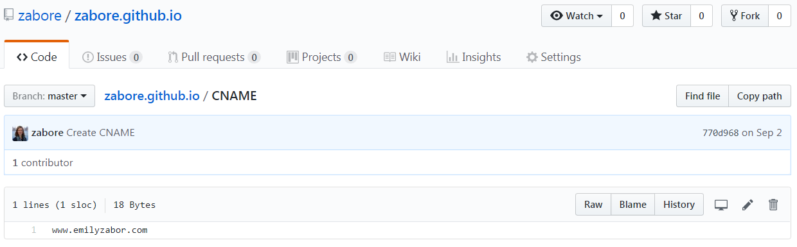
An example from the website for my package ezfun:
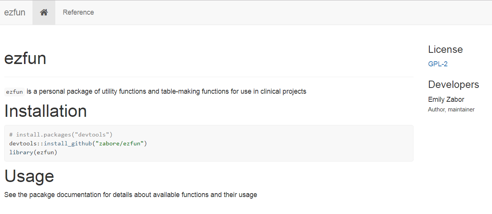
Use Hadley Wickham’s great package pkgdown to easily build a website from your package that is hosted on GitHub. Details of pkgdown can be found on the pkgdown website, which was also created using pkgdown.
This assumes you already have an R package with a local directory and a GitHub repository.
From within your package directory run:
devtools::install_github("hadley/pkgdown")
pkgdown::build_site()This will add a folder called docs to the local directory for your package
Upload/push these changes to the GitHub repository for your package
In the GitHub repository for your package go to Settings > GitHub pages. Select “master branch/docs folder” as the source and hit Save
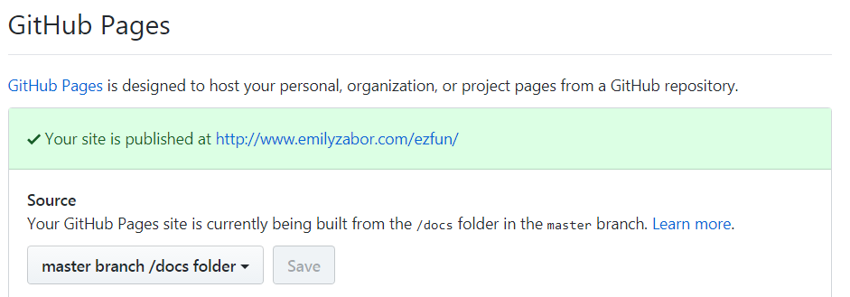
The page will be added as to your personal website as YOUR_GH_NAME.github.io/repo_name
And you’re done, it’s that easy.
You can create a website for a non-package repository as well. For example, I have a page on my website linking to the repository in which this tutorial is stored.
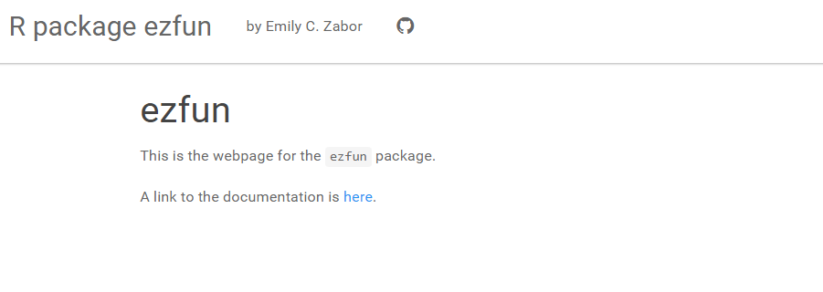
From within the local directory of the project of interest:
_site.yml and index.Rmd file in your new directoryUpload/push these new files to the GitHub repository for your project
Enable GitHub pages for the repository by going to Settings > GitHub Pages, where you’ll select the “master branch” folder and hit Save
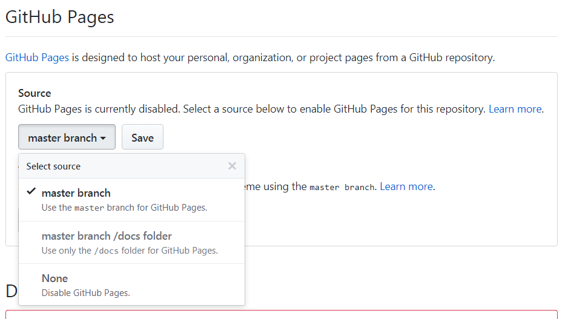
R Markdown websites are simple to create and deploy, but can become cumbersome if you make frequent updates or additions to the website, as in the case of a blog. Luckily, the R package blogdown exists just for this purpose. blogdown is an R package that allows you to create static websites, which means that the deployed version of the website only consists of JavaScript, HTML, CSS, and images. Luckily the blogdown package makes it so that you don’t have to know any of those things to create a beautiful website for your blog, powered by Hugo.
For a complete resource on using the blogdown website, checkout this short blogdown book.
I don’t have a personal blog, so let’s look at the website I built to feature the events and blog of the R-Ladies NYC organization as an example.
The first three steps are similar to those from creating a basic R Markdown website:
Next we get started with blogdown.
blogdown and Hugoinstall.packages("blogdown")
blogdown::install_hugo()Choose a theme and find the link to the theme’s GitHub repository. In this case themes aren’t quite as easy to change as with basic R Markdown websites, so choose carefully.
Within your project session, generate a new site. The option theme_example = TRUE will obtain the files for an example site that you can then customize for your needs. Below “user/repo” refers to the GitHub username and GitHub repository for your selected theme.
blogdown::new_site(theme = "user/repo", theme_example = TRUE)This will generate all of the file structure for your new blog.
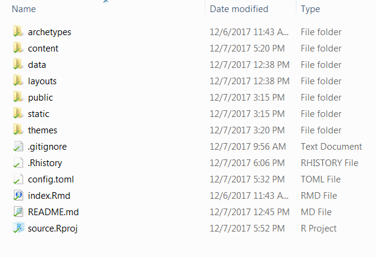
After this is complete, you should quit and then reopen the project. Upon reopening, RStudio will recognize the project as a website.
Make changes to the config.toml file (equivalent to the _site.yml from basic R Markdown websites) to change the layout and appearance of your website. The available features of the config.toml file will differ depending on your theme, and most theme examples come with a well annotated config.toml that you can use as a template.
Once you have customized your website features, click on the RStudio addin “Serve Site” to preview the site locally.
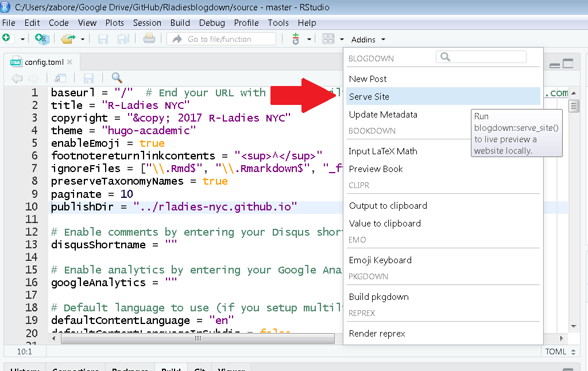
There are several ways to create a new post for your site, but the easiest is using the RStudio addin “New Post”:
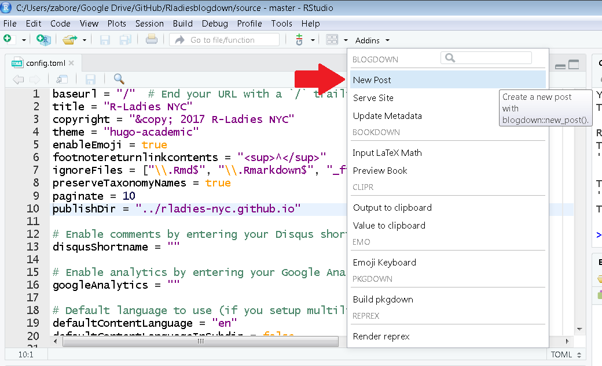
This opens a pop-up where you can enter the meta-data for a new post:
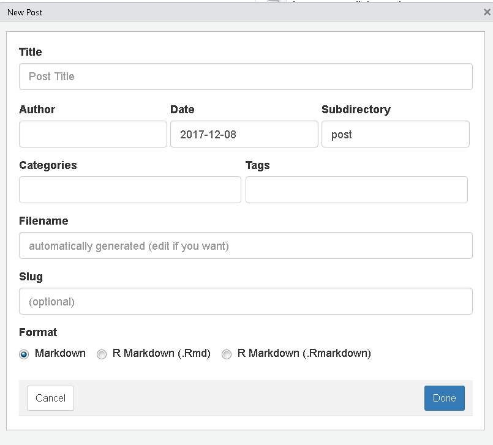
In addition to setting the Title, Author and Date of the post, you can additionally create categories, which will organize your posts in folders, and can add tags to posts, which can make them searchable within your site’s content. Be aware that the functioning of these features will vary by theme. Dates can be in the future to allow future release of a post.
Notice at the bottom that you can select whether to use a regular markdown (.md) or R markdown (.Rmd) file. .Rmd files will have to be rendered before generating html pages so it is best practice to limit their use to cases where R code is included.
A file name and slug will automatically be generated based on the other metadata. The slug is a URL friendly title of your post.
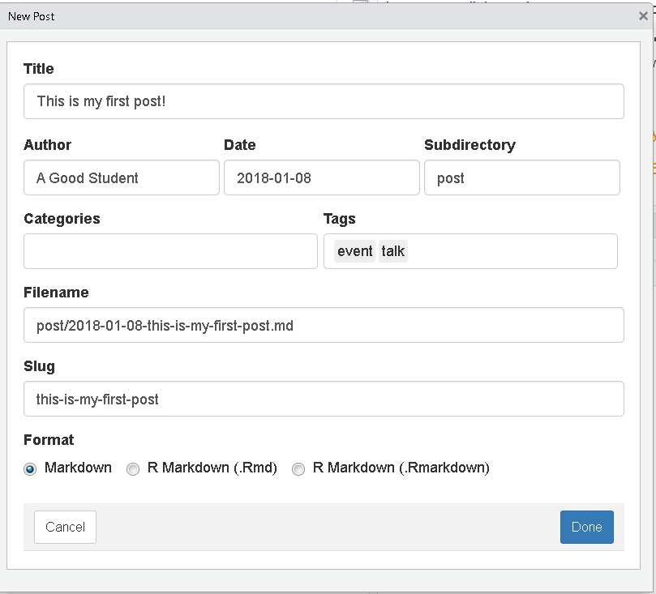
A blogdown site is a bit more cumbersome both to build and to host on GitHub as compared to a regular R Markdown website, and as compared to what I described above.
Problem 1: Because it is a static site, upon building, the files needed to generate the site online are automatically created in a separate subdirectory called public within your local directory. However this will cause problems with GitHub hosting since the files to host need to be in the local YOUR_GH_NAME.github.io directory
My solution:
config.toml files will live.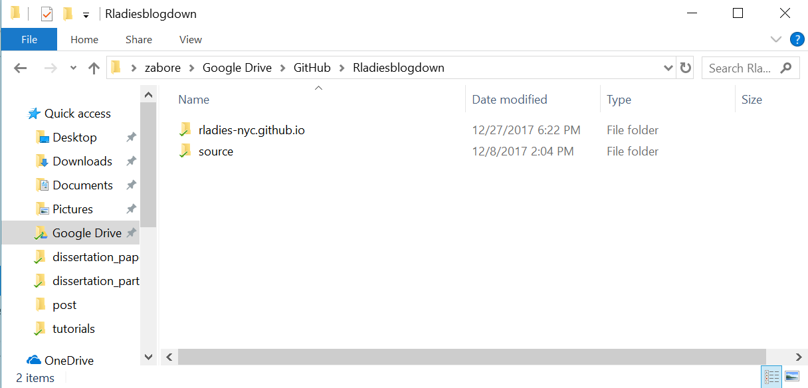
config.toml use the option publishDir = to customize blogdown to publish to the YOUR_GH_NAME.github.io folder, rather than to the default local location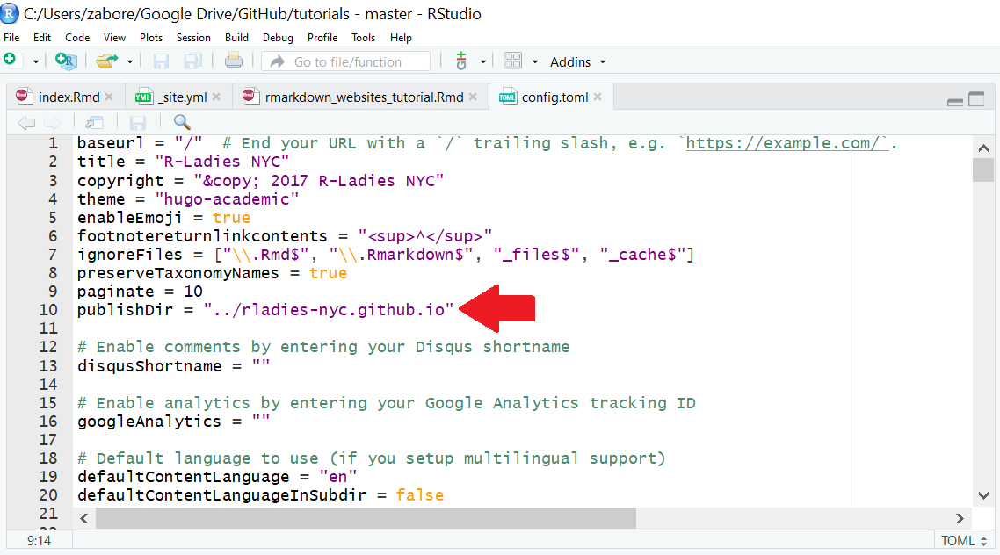
Problem 2: GitHub defaults to using Jekyll with website content, and this needs to be disabled since blogdown sites are built with Hugo
To get around this, you need to include an empty file named .nojekyll in your GitHub repo YOUR_GH_NAME.github.io, prior to publishing.
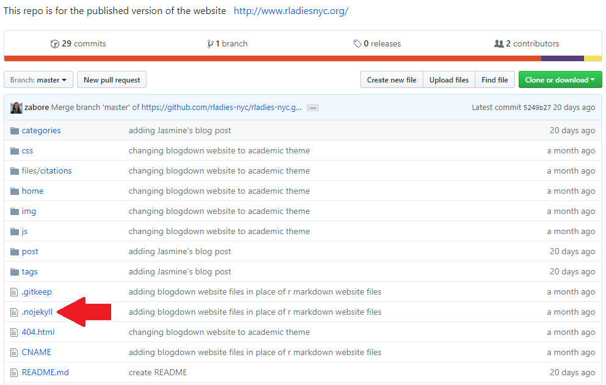
A compiled list of the additional resources/links presented throughout this tutorial:
pkgdown websiteblogdown website